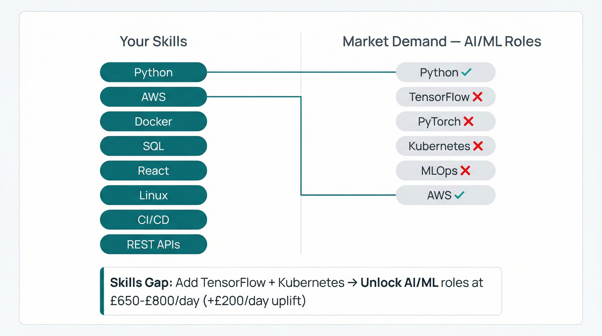
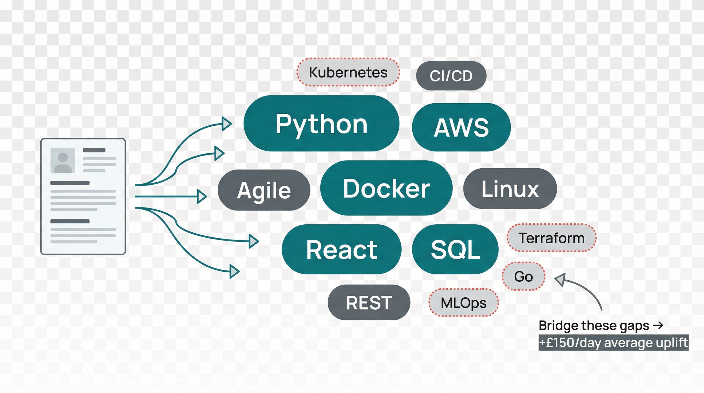

Skills gap analysis, market benchmarking, retirement modelling, and negotiation coaching — powered by data, delivered by experts.
average rate uplift for members
of contractors have untapped earning potential
sectors benchmarked in real time
Our AI analyses real market data to identify the certifications, skills, and experience gaps that are holding your rate back. We don’t guess — we calculate exactly what the market is paying for, and show you the shortest route to get there. Every recommendation is backed by live contractor rate data across your sector, your region, and your experience level. Whether you’re a cloud architect looking to break through the £700/day ceiling or a project manager exploring a pivot into programme delivery, we map the precise steps that will deliver the highest return on your time and investment. Our analysis considers not just immediate rate uplift but long-term career trajectory, giving you a roadmap that compounds year after year.
“Adding AWS Solutions Architect certification = +£75/day based on current market data”
This is the kind of insight that transforms contracting careers. Instead of spending £2,000 and three months on a certification that adds nothing to your rate, you invest in exactly the right credential at exactly the right time. Our members consistently report that this single feature pays for their iGroup membership many times over.
The skills gap analysis is refreshed quarterly, so you always have an up-to-date picture of where the market is heading and what you need to do next. We track emerging technologies, shifting demand patterns, and regulatory changes that create new opportunities for contractors who are positioned correctly.


See exactly where your rate positions you within your sector, your region, and your experience bracket. No more guessing. No more leaving money on the table. Our benchmarking engine processes thousands of live contract rates every week, giving you an always-current view of what the market is actually paying — not what recruiters tell you it’s paying. You’ll see your position relative to other contractors with similar skills, experience, and clearances, broken down by geography, sector, and contract type.
Understanding your market position is the foundation of every successful rate negotiation. When you walk into a discussion knowing that you’re in the top 25% of earners in your sector, you negotiate differently. When you know that contractors with one additional certification are commanding £50–£100 more per day, you make different investment decisions. This is the power of data-driven career management, and it’s available to every iGroup member.
We don’t just show you a number. We show you the distribution, the trends, and the factors that separate the highest earners from the rest. You’ll understand exactly what it takes to move up, and our career advisors are on hand to help you make that move with confidence and precision.
Your personalised benchmarking report is generated automatically when you join iGroup and updated every quarter. It includes sector-specific insights, regional comparisons, and actionable recommendations tailored to your career stage.
At your current trajectory, you could step back at 55. Add one certification and bring that forward to 53. Our retirement modelling tool takes your real earnings data, your current savings rate, and your pension provisions to build a personalised projection that shows exactly when financial independence becomes achievable.
Most contractors have never mapped this out. They know roughly what they earn and roughly what they spend, but the gap between “roughly” and “precisely” can mean the difference between retiring at 52 or working until 60. Our modelling tool closes that gap with hard numbers, stress-tested scenarios, and clear action steps.
We factor in tax-efficient extraction strategies, ISA and pension allowances, property assets, and the impact of rate changes over time. The model updates dynamically as your circumstances change, so you always have an accurate picture of where you stand and what moves will make the biggest difference to your timeline.
Current rate, savings trajectory, and pension projections based on your real data. We start with where you are right now — your income, your outgoings, your existing investments and pension pots. This baseline assessment reveals exactly how your current financial position maps to your long-term goals, and it often surprises people. Many contractors are closer to financial independence than they think, while others discover blind spots that need addressing.
Projected earnings with rate optimisation and strategic skill development applied. Five years of compound growth, informed by data, looks dramatically different from five years of drifting. We model the impact of certification investments, sector pivots, and rate negotiations to show you exactly what your financial position could look like. This isn’t fantasy projecting — it’s based on real market trajectories for contractors who follow our recommendations.
When you can stop, what you’ll have, and what changes could accelerate it. The endgame isn’t just a date on a calendar — it’s a detailed picture of your post-contracting life. We model your income needs, your assets, and your desired lifestyle to give you a clear, achievable retirement target. More importantly, we show you the levers you can pull today to bring that date forward and increase your financial security.
Every rate negotiation is different. Whether you’re a first-time contractor finding your feet or a seasoned professional pushing for a rate increase, we prepare you with the data, the scripts, and the confidence to get the outcome you deserve. Our negotiation coaching combines real market intelligence with proven psychological techniques to help you navigate even the most challenging conversations.
We don’t just tell you what rate to ask for. We prepare you for every possible response, every objection, and every counter-offer. Our coaches have collectively negotiated thousands of contractor rates and know exactly how hiring managers, procurement teams, and recruitment agencies operate. This inside knowledge gives you a significant advantage at the negotiation table.
You’re new to contracting. We prepare you with market data, comparable rates, and a negotiation script. Starting your contracting career on the right foot means setting a strong initial rate. Too many new contractors accept the first number offered because they don’t know what the market pays. We ensure you walk into that first conversation with confidence, armed with specific data points, comparable rate examples from your sector, and a structured approach that feels natural. Our coaching covers everything from how to frame your experience, to when to pause, to exactly how to handle the “what’s your rate?” question that catches so many contractors off guard. The difference between a well-prepared first negotiation and an unprepared one can be £50–£150 per day — that’s £12,000 to £36,000 per year.
Your contract is up for renewal. We show you what others are earning and coach you through the conversation. Contract renewals are the most overlooked opportunity in contracting. Many contractors simply accept the same rate or a token increase, when the market may have moved significantly in their favour. We analyse current market conditions, your tenure value to the client, and comparable rates to determine the optimal rate to request. Our coaching covers timing, framing, and how to leverage your institutional knowledge and delivery track record. We also prepare you for the possibility that the client pushes back, with specific responses and fallback positions that protect your earning potential while maintaining the relationship.
Rates are falling. We help you position your skills in adjacent sectors where demand is still strong. Economic cycles affect every contractor, but they don’t affect every sector equally. When your primary market softens, we identify adjacent sectors where your skills are transferable and demand remains robust. Our cross-sector analysis has helped hundreds of contractors maintain or increase their earnings during downturns by pivoting strategically. We prepare you with sector-specific talking points, help you reframe your experience for new audiences, and provide introductions where possible. The contractors who thrive in downturns are the ones who move first and move smartly — and that requires exactly the kind of intelligence we provide.

Contractors with experience across 2+ sectors command 18% higher rates on average. That’s not a coincidence. Cross-sector experience signals adaptability, breadth of perspective, and the ability to bring proven approaches from one industry to solve problems in another. Clients in every sector value contractors who can draw on diverse experience.
Our sector diversification analysis looks at your current experience and identifies the sectors where your skills are most in demand, where rates are highest, and where the transition cost is lowest. We don’t suggest random pivots — we identify strategic adjacencies that build on your existing strengths while opening new revenue streams.
For example, an IT project manager with NHS experience might find that their understanding of governance and compliance frameworks makes them highly sought-after in pharma and financial services. A rail signalling engineer might discover that their safety-critical systems expertise translates directly to energy and defence. These cross-sector moves aren’t just career insurance — they’re career accelerators.
We benchmark rates and demand across every sector we track, so you can make informed decisions about where to focus your next move. Our advisors can also help you position your CV and online profile to appeal to multiple sectors simultaneously, maximising your visibility and your options.
Career Intelligence isn’t a one-off report — it’s an ongoing service that evolves with your career. Here’s how the process works from the moment you join iGroup through to your long-term career strategy.
When you join iGroup, we gather your professional profile — your skills, certifications, experience history, current rate, and career aspirations. This information feeds into our Career Intelligence engine, which begins building your personalised analysis immediately. The more complete your profile, the more accurate and actionable your insights will be. Most members complete their profile in under fifteen minutes, and many tell us the process itself is valuable because it forces them to think systematically about their career for the first time.
Our AI analyses your profile against live market data from thousands of contractor engagements across the UK. Within 24 hours of joining, you receive your first Career Intelligence report, including your market position, skills gap analysis, and preliminary retirement modelling. This report is reviewed by a human career advisor before it reaches you, ensuring that every recommendation makes sense in the context of your specific situation and goals. We combine quantitative data analysis with qualitative expert judgement to deliver insights you can genuinely act on.
Based on your report, you’ll have a one-to-one session with a career advisor who specialises in your sector. Together, you’ll develop a career strategy that covers the next twelve months: which certifications to pursue, what rate to target at your next renewal, and how to position yourself for the opportunities that align with your goals. This isn’t generic advice — it’s a specific, actionable plan built on your data. Our advisors are former contractors themselves, so they understand the practical realities of implementing career changes while maintaining active contracts.
Your Career Intelligence profile is updated continuously as market conditions change and your career progresses. Every quarter, you receive an updated report showing how your market position has shifted, what new opportunities have emerged, and whether your retirement timeline has changed. You also have access to on-demand negotiation coaching whenever you’re preparing for a rate discussion, and our team is always available to provide guidance on career decisions as they arise. This isn’t a product you use once — it’s a partnership that grows more valuable over time as we accumulate more data about your career and the markets you operate in.
Career Intelligence isn’t theoretical. These are the outcomes our members have achieved by making data-driven career decisions.
“I was billing £450/day and thought that was decent for my experience level. Career Intelligence showed me I was in the bottom 30% for my sector and suggested two specific certifications. Six months later, I’m at £625/day. The data made all the difference.”
“The negotiation coaching was a game-changer. I was about to accept a renewal at the same rate when my advisor showed me the market had moved 15% in my favour. With their coaching, I secured a £75/day increase. That’s an extra £18,000 a year I would have left on the table.”
“The retirement modelling tool showed me I could stop at 53 if I made two specific changes to my savings strategy. I’m 44 now. For the first time in my career, I have a clear finish line and a plan to get there. That peace of mind is worth more than any rate increase.”
The consulting world is full of generic career advice. We built Career Intelligence specifically for the unique challenges and opportunities that contractors face.
Our data comes from real contractor engagements — not job board salary surveys, not recruiter estimates, not averaged industry reports. We track actual rates paid to actual contractors in actual engagements across every sector we cover. This means the insights you receive are grounded in reality, not approximation. When we tell you that your rate is in the 75th percentile for your sector, that figure is based on thousands of verified data points from contractors working in similar roles.
Our AI processes the data. Our human advisors interpret it. Every Career Intelligence report is reviewed by a career advisor with real-world contracting experience before it reaches you. This hybrid approach ensures that our recommendations account for the nuances that pure algorithmic analysis can miss — things like client culture, sector politics, and the practical challenges of implementing career changes while maintaining active contracts and financial commitments.
Career Intelligence doesn’t exist in isolation. It connects seamlessly with every other iGroup service — your Compliance Passport ensures your certifications are always up to date, Rate Intelligence provides the market data that powers your benchmarking, and the Contractor Portal gives you a central place to track your progress and manage your career strategy. This integration means that acting on your Career Intelligence insights is frictionless and immediate.

Everything you need to know about how Career Intelligence works and what it can do for your contracting career.
Yes. Career Intelligence is included in every iGroup membership. There are no additional charges for benchmarking reports, skills gap analysis, or retirement modelling. Negotiation coaching sessions are also included — you can book as many as you need ahead of rate discussions or contract renewals. We believe that career strategy should be accessible to every contractor, not just those who can afford expensive career consultants.
Our data is sourced from verified contractor engagements across the UK. We process thousands of data points every week, covering all major sectors, regions, and experience levels. The data is validated against multiple sources including agency rate cards, client procurement data, and direct contractor reports. Our benchmarking figures are consistently more accurate than publicly available salary surveys because we focus exclusively on contractor rates rather than mixing permanent and temporary employment data.
Your full Career Intelligence report is updated quarterly, but the underlying market data is refreshed weekly. This means your benchmarking position, skills gap analysis, and retirement projections always reflect current market conditions. You’ll receive a notification when your quarterly report is ready, along with a summary of what has changed since the previous update. Between quarterly reports, you have access to the live dashboard where you can explore the latest market data for your sector and region at any time.
Absolutely. Sector diversification is one of the most impactful career moves a contractor can make, and our advisors specialise in helping members navigate cross-sector transitions. We analyse the transferability of your skills, identify the sectors with the highest demand for your experience profile, and help you position yourself effectively for new markets. Many of our most successful members operate across two or three sectors, and our data shows they consistently out-earn single-sector contractors.
Career Intelligence is especially valuable for new contractors. Setting the right initial rate, choosing the right first contract, and understanding your market position from day one can save years of trial and error. Our new-contractor programme includes a dedicated onboarding session with a career advisor, a comprehensive market briefing for your sector, and preparation for your first rate negotiation. Many new contractors report that this support alone justified their iGroup membership.
Career Intelligence is one part of the iGroup ecosystem. Combine it with these services for maximum impact on your contracting career.
Real-time rate data across sectors, regions, and experience levels. Rate Intelligence powers the benchmarking that drives Career Intelligence, giving you always-current visibility of what the market pays for your skills. Together, these services ensure you never unknowingly accept a below-market rate and always negotiate from a position of informed strength. Our members consistently report rate uplifts of 15–25% within their first year of using both services together.
Learn more →Keep all your certifications, qualifications, and compliance documentation in one place — always current, always audit-ready. When Career Intelligence recommends a new certification, your Compliance Passport tracks the progress, stores the credential, and ensures it is visible to clients and agencies who need to verify your qualifications. The integration means that investing in your career development is seamless and fully documented from start to finish.
Learn more →Your central hub for managing your contracting business. The Contractor Portal brings together timesheets, expenses, documents, and communications in one place. Your Career Intelligence dashboard lives here too, giving you a single login for everything you need to run and grow your contracting career. Track your progress against your career plan, review your quarterly reports, and book coaching sessions — all from one clean, intuitive interface designed by contractors for contractors.
Learn more →Stop guessing. Start making data-driven decisions about your contracting career. Career Intelligence gives you the clarity, the confidence, and the coaching to earn more, save smarter, and retire sooner.